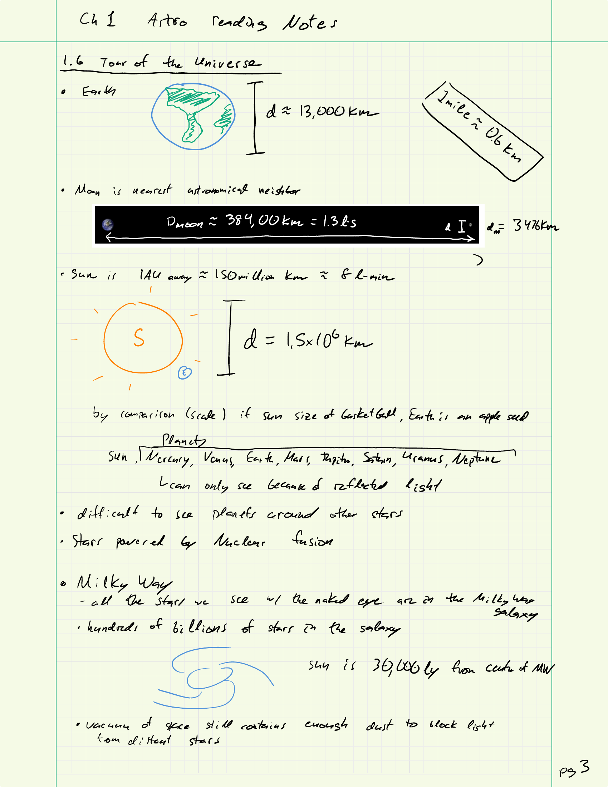
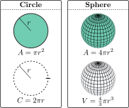
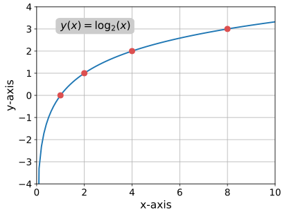
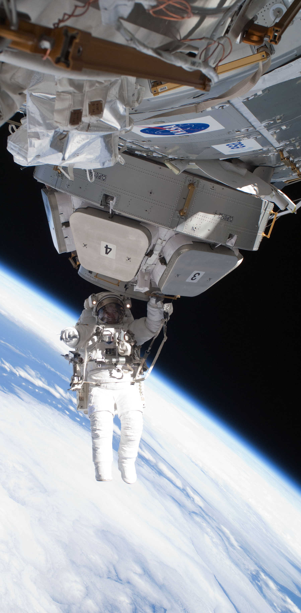

Introductory Astronomy

Instructor's Information
|

Required Materials
OpenStax Astronomy
Homework
ExpertTA
Textbook: OpenStax Astronomy
Homework
|
Laboratory Sessions
Synchronous
Synchronous Labs
/arc-anglerfish-arc2-prod-tronc.s3.amazonaws.com/public/2TQCPCKBMZCHVEV56DET5IVTBM.jpg)
- 11 labs this semester
- You must go to the lab you are register for
- Lab manual provided through Canvas
- You will need access to
- Microsoft Office
- UNL Native App Astronomy Simulations
Online Labs
- 11 labs this semester
- Lab manual provided through Canvas
- You will need to install on your computer
- Microsoft Office
- UNL Native App Astronomy Simulations
- Labs 3 requires outdoor observations
There will be outside night time observations!
Reading Notes
|
 |
Test
|

|
Course Grade
Course Grade = |
This is the formula used to calculate your grade.
$$
\begin{align}
\text{Grade}\, = \,& .15*(\text{Lab}) + \, \\
& .30*(\text{Reading Notes}) + \, \\
& .25*(\text{Homework}) + \, \\
& .10*\left(
\begin{matrix}
\text{SUM}[T1,T2,T3,FE] \\ -\,\text{MIN}[T1,T2,T3,FE]
\end{matrix}
\right)
\end{align}
$$
$\leftarrow$ Tool to help you figure out your grade.
|
Class Calendar
Math Overview
Scientific Notation
$$ \begin{align*} M&=N_\text{atoms}\times m_\text{C} \\ &=300,000,000,000,000,000,000,000 \times \\ & \qquad 0.000,000,000,000,000,000,000,000,02\,\text{kg} \\ &=\big(3E23\big)\big(2E-26\big)\text{kg}\\ &=\big(3\times 2\big)\big(10^{23}\times10^{-26}\big)\,\text{kg}\\ &=6\times10^{23-26}\,\text{kg} \\ &=6E-3\,\text{kg} \\ &=6\,\text{grams} \end{align*} $$ Scientific notation gives us a way to easily communicate the “size” of a number.
Scientific Notation: More Examples
Scientific Notation written by Dr. Douglas P. Hamilton and Mike Asbury in February 1997. Revised by Curran Muhlberger and Dr. Douglas P. Hamilton in December 2007.
Scientific Notation: You try
Question: Simplify $\dfrac{8\times10^{1024}}{4\times10^{1020}}\times0.5\times10^{-3}$
\begin{align}
&=\frac{8}{4}10^{1024-1020}\times\frac{1}{2}10^{-3} \\
&=\frac{8}{4\times2}10^4\times10^{-3}\\
&=\frac{8}{8}10^{4-3}\\
&=1\times10^1\\
&=10
\end{align}
Proportionality
Distance travel is proportional to the time you were traveling- Traveling at 60 mph for one hour you’ll cover 60 miles
- Traveling at 60 mph for two hours you’ll cover 120 miles
$$d\propto t$$
- Traveling 20 miles at 30 mph takes 40 minutes
- Traveling 20 miles at 60 mph takes 20 minutes
Geometry
Trigonometry
The math of right triangles!

|
\begin{gather*} \text{SOH-CAH-TOA} \\ \sin\theta=\frac{\text{opposite}}{\text{hypotenuse}}=\frac{b}{c} \\ \cos\theta=\frac{\text{adjacent}}{\text{hypotenuse}}=\frac{a}{c} \\ \tan\theta=\frac{\text{opposite}}{\text{adjacent}}=\frac{b}{a} \end{gather*} |
Pythagoras’ Theorem: $a^2 + b^2 = c^2$
Logarithms
Logarithm is the inverse of exponentiation (just as division is the inverse of multiplication) \begin{equation} 4^x=10 \quad \Rightarrow \quad \log_4(4^x)=\log_4(10) \quad \Rightarrow \quad x=\log_4(10) \end{equation} Invented by astronomers to make their lives easier.|
Simplify difficult large number calculations and
reduce wide ranging quantities (log scales) \begin{align} \text{multiplication hard} & \\ \log(278\cdot316) = & \log(278)+\log(316) \\ & \text{addition easy} \end{align} |
 |
Final Thoughts
|
 |